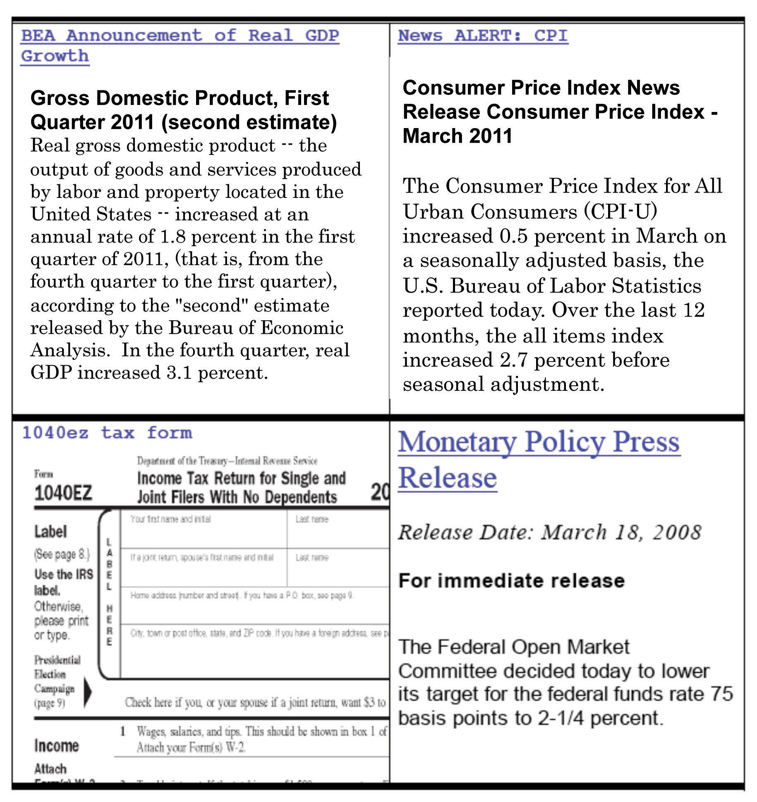
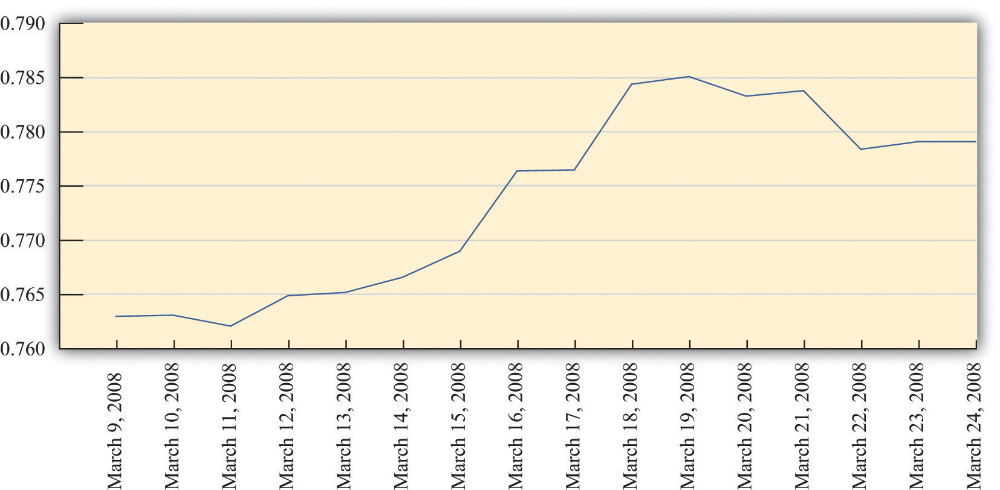

After you have read this section, you should be able to answer the following questions:
Figure 3.1
The four screens in Figure 3.1 are diverse illustrations of macroeconomics as you might encounter it:
By the time you have finished this book, you will see these examples very differently from the way you do right now. You may not know it, but your everyday life is filled with macroeconomics in action.
The top left screen in Figure 3.1 is tuned to the Bureau of Economic Analysis (BEA; http://www.bea.gov), which is a part of the US government. A newspaper article or blog that reports such news from the BEA is telling us about the state of the macroeconomy. The report from the BEA tells you how the economy has been doing over the previous three months. More specifically, it describes what has happened to something called real gross domestic product (real GDP)A measure of production that has been corrected for any changes in overall prices..
As you will soon learn, real GDP is a measure of the overall level of economic activity within an economy. We won’t worry for the moment about exactly what GDP means or how it is measured. Looking at the BEA announcement (http://www.bea.gov/newsreleases/national/gdp/2011/gdp1q11_2nd.htm), you can see that in the first quarter of 2011, real GDP increased by 1.8 percent, whereas in the fourth quarter of 2010, it increased by 3.1 percent. Because real GDP increased in both quarters, we know that the economy is growing. However, it grew much more slowly in the first quarter of 2011 than in the final quarter of 2010.
You might wonder why you would bother to listen to this report. Perhaps it looks rather dry and boring. Yet the performance of the economy has a direct impact on how easy it is to find a job if you are looking for one, how likely you are to lose your job if you are already employed, how much you will earn, and what you can buy with the income you receive from working. Overall economic activity is directly linked to the well-being of everyone in the economy, including yourself. Should you be worried when you see that real GDP is growing much more slowly than before? After you have read this book, we hope you will know the answer.
Because real GDP is such a general measure of economic activity, it can also be used to compare how economies throughout the world are performing. If you have traveled to other countries, you may have observed big differences in people’s standards of living. If you go to Canada, France, or Japan, you will generally see relatively prosperous people who can afford decent food, clothing, and shelter. If you go to Laos, Guatemala, or Malawi, you will see people living in severe poverty. To understand these differences, we need to understand what determines real GDP in an economy.
The top right screen in Figure 3.1 reports on another economic variable that comes up all the time in the news: the rate of inflationThe growth rate of the price index from one year to the next.. You have probably never visited the Bureau of Labor Statistics (BLS; http://www.bls.gov) website from which we took this quotation. But you have certainly heard a news story, perhaps on television or your car radio, telling you about the inflation rate.
After the BLS releases a report such as this one (http://www.bls.gov/news.release/cpi.nr0.htm), news programs will note that the inflation rate reported in March 2011 was 2.7 percent. This means that, on average, prices in the economy are 2.7 percent greater than they were a year ago. If you bought a jacket for $100 last year, you should expect the same jacket to cost about $102.70 right now. Not every single good and service increases by exactly this amount, of course. But, on average, prices are now 2.7 percent higher.
A news report like this tells us that the things we buy have become more expensive. This matters to all of us. If your income has not increased over the last year, this inflation report tells you that you are worse off now than you were last year because you can no longer buy as much with your income.
Most of the time, you will hear news reports about inflation only for the country in which you are living. Occasionally, you might also hear a news report about inflation somewhere else. In early 2008, you might well have heard a news report that the inflation rate in Zimbabwe was over 100,000 percent. You would probably find it difficult to imagine living in a country where prices increase so quickly, and you might reasonably wonder how two different countries in the world could have such different rates of inflation. When you have finished this book, you will know the answer to this question.
The bottom left screen in Figure 3.1 is something you may have seen before. It is a US tax form. Residents of the United States must file this form or one like it every year by April 15. If you live in another country, you almost certainly have to file a similar form. As individuals, we typically see this form as a personal inconvenience, and we don’t think much about what it means for the economy as a whole. But this is much more than a form. It is a manifestation of decisions made by the government about how much tax you and everyone else should pay.
Decisions about how much to tax and how much to spend are known as fiscal policyChanges in taxation and the level of government purchases, typically under the control of a country’s lawmakers.. The fiscal policy adopted by a government affects your life in more ways than you can easily imagine. It not only tells you how much gets taken out of your paycheck, but it also affects real GDP and much more. It affects how likely you are to be unemployed in the future and how much money you will receive from the government if you do lose your job. It affects the interest rate you must pay on your car loan or student loan. It affects the tax rates you will pay 20 years from now and your likelihood of receiving social security payments when you retire.
The bottom right screen in Figure 3.1 draws the attention of individuals and businesses all around the world. Every six weeks a group called the Federal Open Market Committee (FOMC) meets in Washington, DC, to make decisions on the course of US monetary policyChanges in interest rates and other tools that are under the control of the monetary authority of a country (the central bank).. Their decisions affect the interest rates we pay on loans, including car loans, student loans, and mortgages. Their decisions also influence the level of economic activity and the inflation rate. The FOMC could, if it chose, create very high inflation by allowing rapid growth in the amount of money in the economy. It could, if it chose, create high rates of unemployment. It is a powerful organization. There are other similar organizations elsewhere in the world: every country conducts monetary policy in some form, and most have some equivalent of the FOMC.
Figure 3.1 shows the kind of economic news you might see in the United States. If you are living or traveling in a different country, you would see similar announcements about real GDP, inflation, and economic policy. Using the Internet, it is also easy to check news sources in other countries. If you start reading about economics on the Internet, you will come to appreciate the global nature of economics. You can read stories in the United States about monetary policy in China or fiscal policy in Portugal. And you can read news stories in other countries about economic policy in the United States. In the modern globalized world, economic connections across countries are impossible to ignore.
Figure 3.2 "Price of Euro in British Pounds, March 2008" presents two stories that show globalization at work. Both share a common theme: the effects of a March 20, 2008, decision by the FOMC to cut the target federal funds rate. The graph at the top of Figure 3.2 "Price of Euro in British Pounds, March 2008" shows the market price of the euro—the currency used in most of Europe—in terms of the British pound. When you travel, you typically exchange one currency for another. For example, an American tourist traveling to France would buy euros with dollars to have money to spend in France. If that same tourist then wanted to travel from France to London, she might take some of her euros and buy British pounds. The graph tells the price she would have paid in February and March of 2008.
You can see that, over a little more than a week, the euro became much more valuable relative to the pound. Most notably, there was a big increase in the price of the euro between March 9 and March 19, and then prices settled down a bit. This was a wild week for the international economy. In the United States, the Federal Reserve announced major financial support for Wall Street firms on March 16 and then reduced interest rates on March 19. Around the same time, the European Central Bank (ECB) and the Bank of England in London were also taking actions to try to calm the financial markets. At least for a period of time, they seemed to succeed in stopping the rapid rise of the euro against the British pound. It is striking that much of the financial action was taking place in the United States, yet the markets in which Europeans trade currencies were also affected.
The story at the bottom of Figure 3.2 "Price of Euro in British Pounds, March 2008" discusses the response of Asian stock markets to the action of the US Federal Reserve. Markets all over the world increased in value after the action of the FOMC. The actions of the Fed matter well beyond the borders of the United States. Bankers and businesspeople all over the globe are “Fed watchers.”
Figure 3.2 Price of Euro in British Pounds, March 2008
Source: http://www.oanda.com.
TOKYO (AP)—Asian stock markets rose Wednesday as investors welcomed a hefty U.S. interest rate cut…
Japan’s benchmark Nikkei 225 index climbed 2.5 percent to close at 12,260.44 after rising more than 3 percent earlier. Hong Kong’s Hang Seng index, which rose as much as 3 percent earlier, closed up 2.3 percent at 21,866.94.
Australia’s main index jumped 4 percent, and markets in South Korea, China and India also rose.“Asian Stocks Rise after Fed Cut,” MSNBC.com, March 19, 2008, accessed June 27, 2011, http://www.msnbc.msn.com/id/23703748/ns/business- eye_on_the_economy.
After you have read this section, you should be able to answer the following questions:
Let’s look at Figure 3.1 again in a bit more detail.
The top two panels in Figure 3.1 provide information on some key indicators of the state of the economy. The announcement from the Bureau of Economic Analysis (BEA) concerns one of the most closely watched indicators of the macroeconomy: real gross domestic product (real GDP). This is a measure of the goods and services produced by an economy in a year. We discuss real GDP in every macroeconomic application in this book.
Figure 3.3 Real GDP per Person in the United States, 1960–2009

Source: Alan Heston, Robert Summers, and Bettina Aten, Penn World Table Version 7.0, Center for International Comparisons of Production, Income and Prices at the University of Pennsylvania, May 2011.
Figure 3.3 "Real GDP per Person in the United States, 1960–2009" shows real GDP per person (often called real GDP per capita) from 1960 to 2009. Pictures like this one show up all the time in newspapers, in magazines, on television, or on the Internet. One of the things you will learn in your study of macroeconomics is how to interpret such economic data. We devote an entire chapter to understanding exactly how real GDP is measured. For now, we draw your attention to some details to help you appreciate what the graph means.
The horizontal axis indicates the year. Real GDP per person is shown on the vertical axis. To read this graph, you would look at a particular year on the horizontal axis, such as 2000, and then use the curve to see that the real GDP per person in 1965 was about $39,000.
If you look at this picture, the single most notable thing is that real GDP per person has been increasing. It was about 2.6 times larger in 2009 than in 1960. This tells us that, on average, the typical individual in the United States was 2.6 times richer in 2000 compared to 1960. The increase in GDP is not caused by the fact that there are more people in the economy because the figure shows GDP per person. The increase in GDP is not because prices are going up: the word real in this discussion means that it has been corrected for inflation.In the bottom right of the picture, you can see the phrase Data in 1996 dollars. This means that the numbers in the table are based on how much a dollar would have bought in 1996. Do not worry if you do not understand exactly what this phrase means right now. Chapter 18 "The State of the Economy" will provide much more detail.
Another thing you can see from the picture is that the growth of the economy has not been smooth. Sometimes the economy grows fast; sometimes it grows more slowly. Sometimes there are even periods in which the economy shrinks rather than grows. From this figure, you can see that real GDP per person decreased in the mid-1970s, the mid-1980s, and most notably in 2008 and 2009. During these times, people were becoming poorer on average, not richer.
We keep using the phrase on average. This reminds us that, even though the economy as a whole has been getting richer, the picture doesn’t tell us anything about how those gains have been shared across the economy. In fact, some people became a lot richer over this period, while many others saw only small gains, and some became poorer.
We see this uneven distribution very clearly when the economy shrinks. When that happens, one of the things we also observe is that more people in the economy are unemployed—that is, they are looking for a job but unable to find one. The burden of an economic downturn is borne disproportionately by those who lose their jobs.
Although this figure displays the history of the US economy over these 50 years, similar figures can be constructed for other countries around the world. They do not all look identical, but the pattern of uneven growth that we observe for the United States is one that we also see for most other countries. However, it is not true everywhere. We will also see examples of countries that have become poorer rather than richer in recent decades.
Real GDP is the most frequently watched indicator of economic performance. A second key indicator is the one in the top right screen of Figure 3.1: the inflation rate. The Bureau of Labor Statistics (BLS) collects information on prices on an ongoing basis; each month it releases information on how fast prices are changing. The rate at which prices are changing is the inflation rate. Other countries similarly have government agencies entrusted with gathering information about the inflation rate and other economic indicators.
It may seem that the job of the BLS is pretty easy: get information on prices and report it. Their task is, in fact, rather complex. In part, it is difficult because there are so many goods and services in the economy. So when we say that prices are increasing, we must decide which goods and services we are talking about. In addition, new goods appear, and obsolete goods disappear; the BLS must take this into account. And the quality of goods changes as well. If the price of a computer increases, is this an example of inflation or does it reflect an increase in the quality of the computer?
What are the implications of an inflation announcement? All else being the same, higher prices mean that we are unable to afford goods and services we were able to buy when prices were lower. But “all else” is not the same. Generally when prices increase, wages also increase. This means that the overall effects of inflation on our ability to buy goods and services are not self-evident.
Another implication of inflation is the policy response it elicits. The monetary authorities in the United States and many other countries are focused on ensuring that inflation does not get out of control. A report of inflation might therefore lead to a response by a monetary authority. Inflation affects us directly through the prices we pay and the wages we receive and indirectly through the policy response it induces.
Though not included in our screens, another significant variable also indicates the state of the macroeconomy: the rate of unemployment. The BLS (http://www.bls.gov/news.release/empsit.toc.htm) reports the unemployment rateThe number of unemployed individuals divided by the sum of the number employed and the number unemployed. on a monthly basis. It measures the fraction of people in the labor force who do not have a job. When real GDP is relatively high, then the unemployment rate tends to be lower than average, but when real GDP decreases, more people find themselves out of a job.
The top screens in Figure 3.1 provide information that flows to the policymakers in an economy. These policymakers carefully watch the state of the economy and then, if appropriate, take actions. The bottom screens in Figure 3.1 show policy in action.
For individuals and firms paying taxes in the United States, April 15 is an important day because tax forms are due for the previous calendar year. Each year US citizens fill out their tax forms and either make tax payments or receive reimbursements from the government.
The tax day differs across countries, but the experience is much the same everywhere: individuals and firms must pay taxes to the government. This is one of the key ways in which citizens interact with their governments.
A more complete version of the 1040EZ form for 2010 is shown in Figure 3.4 "Form 1040EZ".
Figure 3.4 Form 1040EZ

From the perspective of an individual filling out this form, the task is to get the data correct and determine exactly what figures go where on the form. This is no small challenge. From the perspective of economists working for the government, the tax form is an instrument of fiscal policy. Embedded in the tax form are various tax rates that must be paid on the different types of income you earn.
Where do these tax revenues go? The government collects taxes to finance its purchases of goods and services in the economy—such as roads, schools, and national defense—and also to make transfers to households, such as unemployment insurance.
The tax forms we fill out change each year, sometimes quite significantly. The tax rates households and firms confront are changed by governmental decisions. The government alters tax rates to affect the level of economic activity in the economy. It uses these tools when, in its judgment, the level of economic activity (as measured by real GDP, the unemployment rate, and other variables we will learn about) is insufficient. This is a delicate assessment that requires an understanding of the meaning and measurement of satisfactory economic performance and a deep understanding of how the economy works.
For example, consider the winter of 2008. Policymakers working in the White House and on Capitol Hill kept careful track of the state of the economy, looking as we just did at announcements from the BEA and the BLS on output and inflation. Eventually, they concluded that economic activity was not at a high enough level. They took actions to increase output by reducing taxes through the American Recovery and Reinvestment Act of 2009 (http://www.irs.gov/newsroom/article/0,,id=204335,00.html). The idea is as follows: when people pay less in taxes, they have more income available to spend, so they will purchase more goods and services. The link between the legislation and you as an individual is through tax forms like the one shown in Figure 3.4 "Form 1040EZ".
The bottom right screen in Figure 3.1 shows a decision of the Federal Open Market Committee (FOMC) to reduce a key interest rate by three-fourths of a percentage point to 2.25 percent. As we shall see in our study of monetary policy, a reduction in interest rates is a tool to increase economic activity. Lower interest rates make it cheaper for households and firms to borrow, so they spend more on goods and services. The FOMC action was taken on account of weak economic conditions in the United States, but its consequences were felt worldwide.
Other monetary authorities likewise look at the state of their economies and adjust their monetary policy. The following is part of a statement from the European Central Bank (ECB), the monetary policy authority for the European Union. It was part of a press conference held in April 2005 in which Jean-Claude Trichet, president of the ECB, and Lucas Papademos, vice president of the ECB, provided a statement about economic outlook for Europe and the stance of monetary policy.
All in all, we have not changed our assessment of risks to price stability over the medium term. So far, we have seen no significant evidence of underlying domestic inflationary pressures building up in the euro area. Accordingly, we have left the key ECB interest rates unchanged. Both nominal and real rates are at exceptionally low levels, lending ongoing support to economic activity. However, upside risks to price stability over the medium term remain and continued vigilance is therefore of the essence.
I shall now explain our assessment in more detail, turning first to the economic analysis. Recent data and survey indicators on economic activity have been mixed. In general they point to ongoing economic growth at a moderate pace over the short term, with no clear signs as yet of a strengthening in underlying dynamics.
Looking further ahead, the conditions remain in place for moderate economic growth to continue. Global growth remains solid, providing a favourable environment for euro area exports. On the domestic side, investment is expected to continue to be supported by very favourable financing conditions, improved profits and greater business efficiency. Consumption growth should develop in line with real disposable income growth. However, at the same time, persistently high oil prices in particular pose downside risks to growth.
[…]“Introductory Statement with Q&A,” European Central Bank, April 7, 2005, accessed June 27, 2011, http://www.ecb.int/press/pressconf/2005/html/is050407.en.html.
Statements such as this are reported in the business press and widely read. Businesspeople all over the world closely follow the actions of central banks. That is, the people interested in this statement by the ECB were not only European citizens but also individuals in the United States and other countries. Likewise, when the Fed takes action, the news shows up on televisions and computer screens across the world.
The ECB quotation mentions several key economic variables: inflation, real interest rates, nominal interest rates, economic activity, investment, exports, consumption growth, and real disposable income growth. These variables are also important indicators of the state of the economy, as we can tell from the fact that they play such a prominent role in the ECB assessment.
The economists at the ECB need to know the current state of the economy when deciding on what policies to pursue. But there are compelling reasons for others to care about these variables as well. Suppose, for example, that you are an investor contemplating an investment in Spain. Your interest is in making profit from producing a good in Spain and selling it in that country and others. The profitability of the investment in Spain depends on the overall state of the Spanish economy and its neighbors in the European Union who are the target group for your sales.
For you as an investor, the ECB statement contains vital information about the state of the European economy. It also contains information on the likely conduct of monetary and fiscal policy in Europe. These factors matter for you simply because they impact the profitability of your investment. Thus you want to understand the statements from the ECB, starting with the definitions of key macroeconomic variables.
By now, you may well have a number of questions. What exactly are these monetary authorities in Europe and the United States? Where do they come from and what are their powers? How exactly do their actions have so much influence on our lives? Answering these questions is one of our tasks in this book. We devote two full chapters to the determination and the influence of monetary policy in the economy.
After you have read this section, you should be able to answer the following questions:
We have seen the news and policy in action. But there is a vital piece missing: given the economic news, how do policymakers know what to do? The answer to this question is at the heart of this book. The basic methodology of macroeconomics is displayed in Figure 3.5 "Macroeconomics Methodology". Macroeconomics involves the interplay of theory, data, and policy. We have already seen two of these components in Figure 3.1. Two screens highlighted data we have on the macroeconomy, and two screens highlighted policy actions.
Figure 3.5 Macroeconomics Methodology

The answer to the question “how do policymakers know what to do?” is on the top left of Figure 3.5 "Macroeconomics Methodology": theory. Macroeconomists typically begin by observing the world and then try to develop a theoretical framework to explain what they have seen. (An old joke says that the definition of an economist is “someone who sees something happen in practice and wonders whether on earth it is possible in theory.”) Usually, a theory developed by economists has a mathematical foundation—expressed by either equations or diagrams. There is even a bit of art here: the theoretical framework must be simple enough to work with yet realistic enough to be useful.
We hinted at these theories in our earlier discussion when we explained that both monetary policy and fiscal policy affect the economy by changing the willingness of households and firms to purchase goods and services. In our applications chapters, we develop these ideas and explain the frameworks that policymakers use when deciding on their policies.
Our frameworks—or models, as they are often called—are tested by their ability to match existing data and provide accurate predictions about new data. Models are constantly refined so that they can do a better job of matching facts. After many rounds of interaction between theory and data, a useful framework emerges. This then becomes the basis for policymaking.
How do policymakers know about the theories devised by economists? Politicians are typically not expert economists. In most countries, a large number of trained economists are employed as advisors to the government. These individuals have studied economic theory and are also familiar with economic statistics, allowing them to provide the link between the economic frameworks and the actual implementation of policy.
The big challenge for economists is to understand the links from policy to the aggregate economy. When you first learned to drive, you were presumably introduced to all the instruments in the car: the steering wheel, the accelerator, the brake, the mirrors, and so forth. At the same time, you were learning the rules of the road. For many, the instruments of the car are easy enough to grasp, and the rules of the road are reasonably intuitive. The difficulty (and this is why driving schools make money) is in making the connection between the controls in the car and the outcome you wish to achieve while driving. The same is true of economic modeling: policy tools are not very difficult to understand, yet it can take decades of experience to truly understand how to use these tools effectively.
Economists and businesspeople hope, for example, that the current chairman of the Federal Reserve, Ben Bernanke, has this understanding, as discussed in the following news article excerpt.
In terms of intellect, Ben S. Bernanke may be to the Federal Reserve what John G. Roberts Jr. is to the Supreme Court. And like Chief Justice Roberts, Mr. Bernanke, the nominee to replace Alan Greenspan at the Fed, has left a paper trail worth studying. What can it tell us about the sort of Fed chairman he would be?
In general, Mr. Bernanke’s work has been solidly in the mainstream—a mainstream he has helped define since he began publishing papers in major economic journals since 1981. He has written repeatedly about ways of using mathematical models of a dauntingly complex economy to set monetary policy. When he has strayed from that subject, his conclusions have sometimes raised eyebrows.
[…]
These topics, however, are not at the core of what Mr. Bernanke would be concerned with at the Fed. There, his opinions about domestic monetary policy would be more important. One tenet of Mr. Bernanke’s philosophy could not be clearer: that the central bank should use a model, not just hunches, to decide about interest rates and the money supply.
This is how he put it in 1997 in a paper with Michael Woodford, now a professor of political economy at Columbia: “We conclude that, although private-sector forecasts may contain information useful to the central bank, ultimately the monetary authorities must rely on an explicit structural model of the economy to guide their policy decisions.”
[…]Daniel Altman, “Economic View: Bernanke’s Models, and Their Limits,” New York Times, October 30, 2005, accessed June 27, 2011, http://www.nytimes.com/2005/10/30/business/yourmoney/30econview.html.
Our book is built around economic topics, such as the income tax code, the social security system, the determination of monetary policy in Europe, and the contrasting economic health of different countries.
Throughout this book, we will emphasize the measurement and interpretation of economic data. Understanding how to read charts and tables of economic data is a critical skill for anyone who wants to be a sophisticated consumer of economic and political news. We also explain both policy tools and their links to economic outcomes. Understanding these links requires a model of the economy. We introduce models as needed, in the context of their applications. Mastering macroeconomics involves both understanding the tools that macroeconomists use and knowing how and when those tools should be applied. In this book, you will learn about these tools by example: you will see them in use as we study different questions in economics. At the same time, you will learn about many topics that should interest you as engaged and aware citizens of the world. We hope that, after reading this book, you will both better understand what it is that economists do and be better informed about the world in which we all live.
As you proceed through the chapters, you will often see reference to our toolkit. This is a collection of some of the most important tools that we use over and over in different chapters. Each tool is fully introduced somewhere in the book, but you can also use the toolkit as a reference when working through different chapters. In addition, it can serve as a study aid when you are preparing for quizzes and examinations.
We try to avoid getting too hung up on the mathematical expression of our theories (although the math will usually be lurking in the background where you can’t quite see it). In particular, our applications chapters contain very little mathematics. This means that you can read and understand the applications without needing to work through a lot of mathematics. Compared to our applications chapters, our toolkit contains slightly more formal versions of the frameworks that we develop. You will refer to the tools over and over again as we progress through the book, for the same tool is often used to shed light on all sorts of different questions.